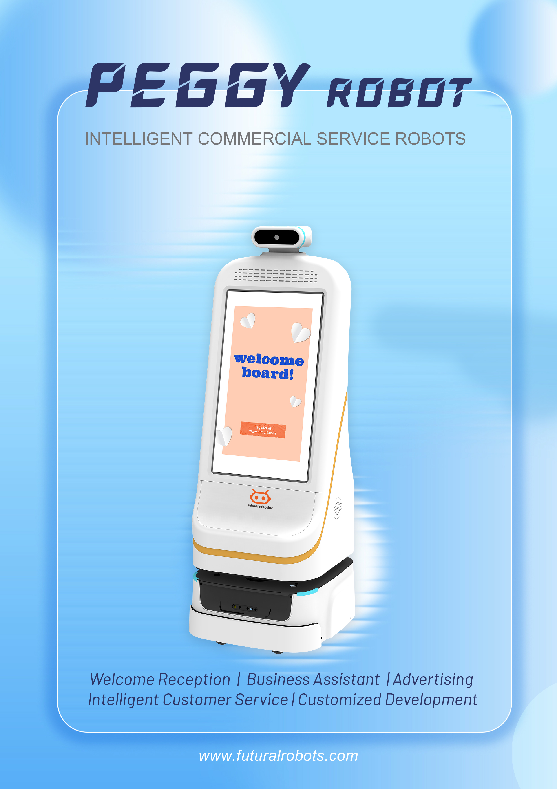

双擎“轮式人形机器人”是什么？杭州市 115 引智重点项目解读

"轮式人形机器人"是双擎科技具身智能布局中的重要方向之一。其相关方向已入选杭州市 115 引智重点项目，体现了地方对双擎研发能力的认可。
双擎的轮式人形机器人是什么定位？
轮式人形机器人是双擎科技在具身智能赛道的产品方向之一，融合 AMR 自主移动、多模态感知与融合、VLA 大模型以及自研 EI-Core 智能框架，面向服务与交互场景。
杭州市 115 引智重点项目意味着什么？
杭州市 115 引智重点项目聚焦引进海外智力服务重点产业。双擎相关方向入选，说明其轮式人形机器人研发获得地方层面的重点项目支持。
双擎凭什么做轮式人形机器人？
双擎科技为国家级高新技术企业（证书号 GR202533006349，2025 年认定），由博士领衔的研发团队支撑，具备 AMR、多模态感知、VLA 与 EI-Core 的全栈技术积累，并已形成迎宾/导医等人形服务机器人的产品矩阵。
具身智能全栈能力
支撑轮式人形机器人的，是双擎从 AMR、多模态感知与融合、VLA 大模型到自研 EI-Core 框架的全栈积累。这种全栈能力让双擎既能做医院配送、消毒、导医机器人，也能延伸到人形服务机器人，形成可复用的技术中台，降低新形态产品的研发门槛。
已有产品矩阵支撑
双擎迎宾/导医机器人系列已落地小晴 FW-24M、Peggy FW-24M、小双 FW-27M、小青/小擎 FW-22M 等多款机型，覆盖展厅讲解、带路、业务咨询等交互场景。轮式人形机器人方向正是在这套成熟的人形服务产品经验之上，向更高自主交互能力演进。
小结
轮式人形机器人不是单点炫技，而是双擎"具身智能全栈能力"的延伸。从自研框架到真实场景产品，双擎正把杭州的引智项目红利转化为可落地的机器人能力。